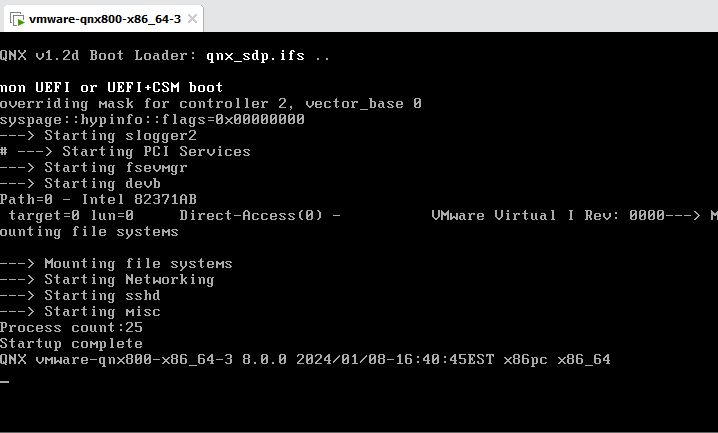
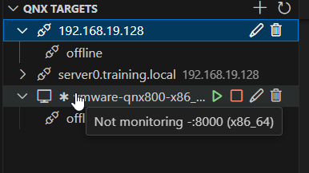
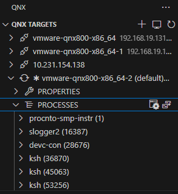

To create your QNX OS target system as a VM, you need to create a target connection using QNX Toolkit.
Before creating the target connection, ensure that you've configured the qnx.sdpPath setting. For information about configuring the SDP path, refer to Getting started
in QNX Toolkit for Visual Studio Code. To fix problems you may encounter when you work with the QNX Toolkit, refer to
Known issues
in QNX Toolkit for Visual Studio Code.
For the purpose of this guide, you'll create a QNX virtual machine target using VMware. You have to install VMware before the IDE can run the VM. This is different from using a physical target system.
To create a new virtual target:

Controlling a virtual target
You can start, stop, and re-build virtual targets.
To control the virtual target:

If you want to see what's running on the target, you can click it in the Primary Side Bar of the QNX Toolkit extension. From there, you can view the following: Properties, Processes, Filesystem, Cores, Physical Memory, and Dashboards.
